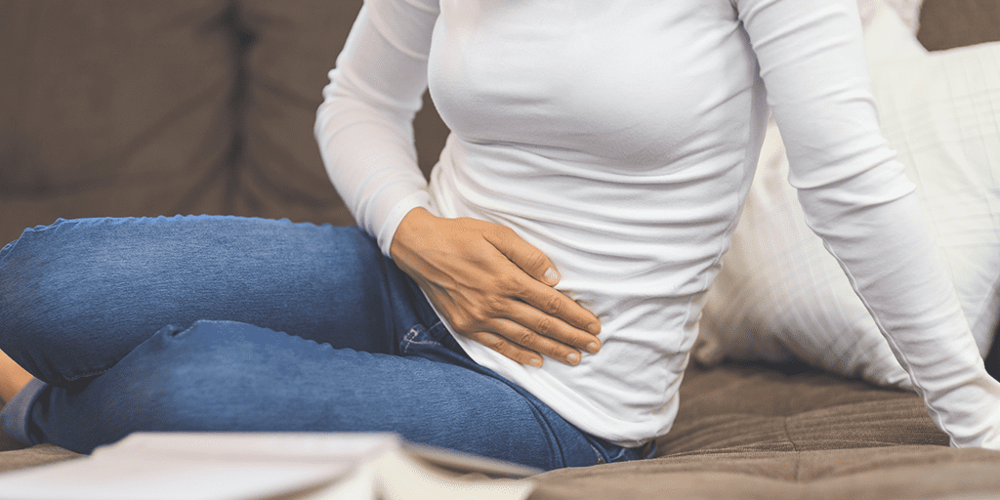

Poznaj metodę, dzięki której wzmocniłam mięśnie dna miednicy o 87,7%, pozbyłam się wstydu i mokrych plam na spodniach w niecały miesiąc!
Już w 28 dni 6-krotnie zmniejszysz nadwrażliwość pęcherza, 5-krotnie wzmocnisz mięśnie dna miednicy oraz pozbędziesz się popuszczania i parcia na pęcherz.
W końcu pozbyłam się uporczywego parcia na pęcherz, latania do toalety co 5 minut i mokrych plam na spodniach. Przez problemy z pęcherzem czułam się, jakbym żyła w klatce. Na szczęście odkryłam tę REWOLUCYJNĄ METODĘ i w końcu CZUJĘ, ŻE ŻYJĘ – teraz PORA na Ciebie! Piszę o niej, aby Ci POMÓC, bo sama WIEM jak problem z nietrzymaniem moczu może zniszczyć życie!
Hej Kochane! Mam na imię Marta i jestem żoną, panią domu i pewną siebie kobietą. Moją największą pasją jest branża beauty, ale muszę też się przyznać do tego, że uwielbiam oglądać z moim mężem mecze piłki nożnej. I nie, nie chodzi o to, żeby popatrzeć na przystojnych piłkarzy (chociaż Ani można Roberta pozazdrościć, nie sądzicie? 😉). Uwielbiam spędzać czas z rodziną, szczególnie na świeżym powietrzu. Latem jesteśmy mistrzami w urządzaniu pikników. Moje motto:
Nigdy nie jest za późno – by zmienić swoje życie, za późno by być szczęśliwym.
Ja już jestem szczęśliwa, a Ty? 😊
Masz już serdecznie dość ciągłego parcia na pęcherz, pieczenia przy oddawaniu moczu, plamienia spodni? Ile razy dziennie można chodzić do toalety, narażać się na wstyd i upokorzenie? Zawalać obowiązki służbowe przez nieustanne latanie do toalety? Ja katowałam się tak przez wiele lat, a do tego wydałam mnóstwo pieniędzy na chemiczne, trujące tabletki i pieluchomajtki. Wszystko na nic, żadnych rezultatów… Na szczęście natrafiłam na preparat, który już na zawsze zmienił moje życie! Uznałam, że muszę pomóc tym, którzy wciąż tak jak ja kiedyś, zmagają się z problemem nietrzymania moczu.
Jeśli masz idealny układ moczowy, to nie potrzebujesz mojej pomocy – doceniaj to, co masz! Ale jeżeli cierpisz i doskonale wiesz, jak to jest to, czytaj dalej. Dostaniesz ode mnie receptę na zdrowy i szczelny układ moczowy! To formuła, której rewelacyjne rezultaty zszokowały nawet mojego lekarza! Zaczął przepisywać ją wszystkim swoim pacjentom. Bo działa ona na każdego bez wyjątku!
Wyobraź sobie, jak nagle wyrzucasz do kosza pieluchomajtki i nie żyjesz w ciągłym strachu i poczuciu wstydu. Pomyśl, jak to jest w końcu zapomnieć o plamach na spodniach i ciągłym parciu na pęcherz. To wszystko MOŻE SIĘ SPEŁNIĆ! To zależy tylko od Ciebie!
pomoże każdemu, kto ma problemy z nieszczelnym pęcherzem – ja sama jestem tego doskonałym przykładem! Nazywam się Marta Chorczyńska, mieszkam we Wrocławiu, pracuję w jednej z restauracji na Starym Mieście jako kelnerka. Ciągłe plamy na spodniach były dla mnie koszmarem. Zamiast obsługiwać klientów nieustannie biegałam do toalety, koleżanki na zapleczu się ze mnie śmiały, klienci niecierpliwili, szef się denerwował. Krzyczał, że powinnam nosić pieluchy, że jeżeli nic z tym nie zrobię to wyrzuci mnie na bruk. To wszystko zrobiło ze mnie kłębek nerwów. Byłam bliska depresji. Na szczęście to wszystko już za mną dzięki .
Przez długie lata nie byłam w stanie pozbyć się problemu z nietrzymaniem moczu. Próbowałam każdego możliwego rozwiązania: pieluchomajtek, przeróżnych chemicznych preparatów, nawet pampersów – niestety nie pomagało zupełnie nic. Usłyszałam wyrok od lekarzy. A przecież musiałam być zdrowa – dla siebie, dzieci i męża! ! Nie chciałam wydawać fortuny z rodzinnego budżetu na operacje uszczelniania pęcherza, tym bardziej, że nie wiadomo czy w ogóle coś by to pomogło. Czułam w środku, że musi być jakieś inne, bezpieczniejsze rozwiązanie.
Wypróbowałam wiele różnych rozwiązań, ale nie przyniosły żadnych rezultatów, bo ani jeden nie był tak skuteczny jak . O tym produkcie powiedziała mi znajoma z Norwegii, bo u nich to hit już od wielu lat. Już na drugi dzień czułam mniejsze parcie na pęcherz, już tak nie piekło przy oddawaniu moczu. W kolejnym dniu w końcu miałam suche spodnie i nie śmierdziałam moczem. stał się moim antidotum na problemy układu moczowego. Przywrócił mi poczucie atrakcyjności i pewność siebie, a tego potrzebuje przecież każdy z nas!
Po kuracji pewnego dnia odwiedziła mnie siostra. Zobaczyła w moim koszu na śmieci paczkę pieluchomajtek. Była w szoku, spytała czy zrobiłam sobie operacje uszczelniania pęcherza. Roześmiałam się głośno i powiedziałam, że absolutnie nie robiłam żadnych operacji, że za moim szczęściem stoi zupełnie co innego. Siostra zauważyła też, że przestałam tak często chodzić do toalety, nie plamię spodni. Wyznałam jej, że to wszystko dzięki .
Wyobraź sobie, że w końcu wychodzisz z domu bez strachu i nie rozglądasz się nerwowo za toaletą, idziesz po plaży nie obawiając się, że poplamisz strój kąpielowy, Twoje ciągłe wyjścia „na chwilę” nie wzbudzają zażenowania rodziny i znajomych. To wspaniałe uczucie! Wiem, bo tak teraz mam! A jeśli też chcesz to poczuć, to zajrzyj TUTAJ. Właśnie na tej stronie udało mi się kupić w możliwie najniższej cenie.
Dlaczego ta kuracja jest aż tak SKUTECZNA? Czym różni się od środków, które jedynie rujnują Twój portfel i dają fałszywą nadzieję?
zawiera naturalne składniki aktywne, których nie ma w INNYCH PREPARATACH dostępnych w Polsce. Ich połączone działanie odbudowuje nawet najbardziej zniszczony układ moczowy.
Wiem, bo uwolniłam się od nadwrażliwości pęcherza do tego stopnia, by zmniejszyć częstotliwość wizyt w toalecie do zaledwie czterech dziennie. Po trzech tygodniach wyrzuciłam z satysfakcją wszystkie pieluchomajtki, przerzuciłam się na małe wkładki, bo zdarzało mi się jeszcze parę kropel moczu na bieliźnie.
JA POKONAŁAM NIETRZYMANIE MOCZU I TY TEŻ ZWALCZYSZ TEN PROBLEM DZIĘKI TEJ METODZIE!
Zwalczysz nietrzymanie moczu, ponieważ każdy z nas potrzebuje tego samego, by wyeliminować tę wstydliwą przypadłość. Jeżeli preparat na NTM spełnia 4 najważniejsze warunki, to z pewnością na Ciebie zadziała. to robi, dlatego też rozwiązał mój problem, pomoże Tobie i wielu innym osobom, które rozpoczną kurację. Poznaj 4 warunki, które spełnia :
- Mięśnie dna miednicy zostają wzmocnione aż o 89%, co przyczynia się do prawidłowego zaciskania cewki moczowej,
- Likwiduje uczucie ciągłego parcia na pęcherz już po 1 dawce,
- 7 – krotnie wydłuża czas wytrzymania z pełnym pęcherzem,
- Uszczelnia układ moczowy po 7 dniach.

To właśnie te 4 zasady, które stanowią gwarancję wyeliminowania problemów z nietrzymaniem moczu. Pamiętaj, że rozpoczynanie kuracji, która nie spełnia powyższych warunków, nie ma najmniejszego sensu. Ja też na początku nie wierzyłam, że mi pomoże, jednak zostałam pozytywnie zaskoczona.
Do tej pory próbowałam naprawdę wszystkiego, co przychodziło mi do głowy. Nosiłam pampersy, kupowałam pieluchomajtki… Bywały nawet dni, że zakładałam kilka par mocno zabudowanych fig, ale nawet to nie pomagało. Plamy na spodniach ciągle się pojawiały, a ja za każdym razem myślałam, że spalę się ze wstydu. Cała ta sytuacja zaczęła też odbijać się na moim zdrowiu psychicznym…
Ale znajoma, która wspomniała mi o , nie omieszkała też powiedzieć o jego naturalnym składzie oraz 4 warunkach, które spełnia ta unikana kuracja. To właśnie dzięki niej zdaję sobie sprawę z tego, że skuteczna formuła walcząca z nietrzymaniem moczu musi spełniać te 4 warunki, a wtedy zadziała na każdego, niezależnie od wieku oraz stopnia zaawansowania schorzenia.
Jeżeli do tej pory nie poradziłaś sobie z nietrzymaniem moczu, to oznacza, że Twoja metoda zwyczajnie nie spełnia 4 głównych zasad. A żeby je spełniać, musi uszczelnić Twój pęcherz moczowy. Wydaje się to być bardzo proste, jednak wymaga dużej wiedzy na temat ludzkiego organizmu i budowy układu moczowego.
Nie musisz decydować się na założenie taśmy podcewkowej i wydawać krocie na wizyty u specjalistów! w bezinwazyjny sposób rozwiąże Twój problem.
Jak to w ogóle jest możliwe?
Dzisiaj nie mam już problemu z nietrzymaniem moczu i wstydliwymi plamami na spodniach. Moja siostra nie wierzyła w to, co jej powiedziałam!
to najbardziej skuteczna i najszybsza metoda eliminowania nietrzymania moczu, którą rekomendują najbardziej znani specjaliści w Niemczech. Alex Kastner, Heinrich Bieler, Peter Szulz – coś Ci to mówi? To elita wśród specjalistów ginekologii i urologii! Oznacza to, że ich technika również musi być na poziomie elitarnym. to formuła oparta na najnowszych odkryciach XXI wieku w dziedzinie urologii i ginekologii. To zestawienie dwóch największych sił: NAUKI i NATURY – na pewno jesteś świadoma faktu, że nie istnieje nic potężniejszego.
To, co mam Ci dzisiaj do przekazania, przetestowałam osobiście i zapewniam Cię, że wraz z kuracją rozpoczniesz nowe, lepsze życie. Zapewne pracujesz, masz na głowie rodzinę i dom i zwyczajnie na wszystko brakuje Ci czasu. Z pewnością nie bierzesz też pod uwagę ciągłego biegania po specjalistach, którzy nie są w stanie Ci pomóc. Daję Ci właśnie fantastyczną metodę, dzięki której odzyskasz kontrolę nad swoim pęcherzem. Mam nadzieję, że dobrze wykorzystasz tę wiedzę…
to rozwiązanie Twoich problemów z popuszczaniem, bo wreszcie
BĘDZIESZ MOGŁA KONTROLOWAĆ SWÓJ PĘCHERZ!
Większość nie wierzy, że to jest aż tak proste. został jednak sprawdzony przez tysiące konsumentów, którzy bezpowrotnie pozbyli się kłopotów z nietrzymaniem moczu. Zanim sama zdecydowałam się na skorzystanie z kuracji, skontaktowałam się z kilkoma z nich.
Ty też musisz zapoznać się z ich opiniami:„Minęło zaledwie 25 dni od momentu rozpoczęcia kuracji, a ja już dawno zapomniałam, co to znaczy wstyd i zażenowanie. Już po kilku dniach przestałam popuszczać, a moje spodnie wreszcie były suche. Wcześniej nic mi nie pomagało, dopiero rozwiązał ten wstydliwy problem. Dziękuję!
Matylda z Jarocina, 49 lat
„Nie spodziewałem się, że nietrzymanie moczu dotyczy również mężczyzn, jednak kilka miesięcy temu sam boleśnie się o tym przekonałem. Zaczęło się od mokrych plam na bokserkach. Na początku nic sobie z tego nie robiłem, jednak z dnia na dzień było coraz gorzej. Zacząłem unikać ludzi, było mi strasznie wstyd. Na szczęście żona powiedziała mi o . Rewelacyjna kuracja, naprawdę działa cuda!”
Daniel z Zielonej Góry, 45 lat
“Na początku bardzo sceptycznie podchodziłam do kuracji, którą poleciła mi znajoma. Na rynku jest wiele podobnych preparatów, które kosztują krocie, a nie przynoszą żadnych rezultatów. Nie miałam jednak nic do stracenia, więc postanowiłam spróbować. Kto to słyszał, żeby młoda dziewczyna popuszczała w majtki? Nawet nie wiecie jakie to było dla mnie upokarzające. Gdyby nie , nie wiem jakby to się skończyło. Nareszcie nie czuję wstydu i mogę założyć jasne spodnie bez obawy o to, że pojawi się na nich paskudna plama.”
Klaudia z Warszawy, 28 lat
“Od kilku lat borykałam się z problemem, jakim jest wysiłkowe nietrzymanie moczu. Zwykłe kichnięcie czy śmiech to było po prostu życie na krawędzi! Zaczęłam nawet nosić takie grube podpaski, których używają starsze panie, bo o pieluchomajtkach to nawet myśleć nie chciałam. Nic to nie dawało, na spodniach i tak pojawiały się plamy. Czułam się z tym strasznie, zaczęłam popadać w depresję. Dopiero mi pomógł. Dzięki niemu mogę kichać i śmiać się bez obaw.”
Ewelina z Żyrardowa, 31 lat
“Nietrzymanie moczu to było dla mnie istne piekło. Ciągłe parcie na pęcherz, plamy na spodniach i ten przykry zapach. To wszystko powodowało, że coraz bardziej zamykałam się w sobie. Unikałam jakichkolwiek zbliżeń z moim mężem, bo raz zwyczajnie popuściłam. Moje życie nie miało sensu. Na szczęście w porę trafiłam na . Z całego serca mogę go polecić każdemu, kto ma problemy z nietrzymaniem moczu. Nareszcie mogę w pełni korzystać z życia i cieszyć się seksem z moim mężem.”
Alicja z Krakowa, 55 lat
“Problem z nietrzymaniem moczu dosłownie spędzał mi sen z powiek. Próbowałam wszystkiego, kupiłam nawet pieluchomajtki, które kosztowały kilka stówek. Nigdy tak nie żałowałam wydanych pieniędzy jak właśnie w tamtym momencie. Odznaczały mi się na spodniach jakbym w jakimś pampersie chodziła. No normalnie tragedia jakaś. To było strasznie upokarzające. Na szczęście usłyszałam o . Ten preparat okazał się dla mnie wielkim zbawieniem. Dziękuję!”
Beata z Radomia, 56 lat

“Nareszcie znalazłam coś skutecznego, a przy tym tańszego niż większość produktów, które nie przynoszą żadnych rezultatów. Dobrze, że się nie poddałam i trafiłam w końcu na ! Ostatnie lata były dla mnie istnym koszmarem, całkiem wycofałam się z życia towarzyskiego. Znajoma poleciła mi nową kurację, z której od razu skorzystałam. wszystko zmienił, popuszczanie to tylko przykre wspomnienie!
Karolina z Wałcza, 55 lat
Zapomnij o przestarzałych metodach!
Przez 28 dni stosowania kuracji nie pominęłam żadnej tabletki. Tutaj liczy się systematyczność i konsekwencja, by raz na zawsze wyeliminować problem z nietrzymaniem moczu. Ale skoro mi się udało, to Tobie również!
to jedno z najlepszych odkryć medycyny XXI wieku! To antidotum na niekontrolowane popuszczanie.
Ale to jeszcze nie wszystko! Mam dla Ciebie cenne rady, bezpowrotnie rozwiążą Twój problem z nietrzymaniem moczu!
NA KONIEC POWIEM CI O FAKTACH NA TEMAT , KTÓRYCH NIE ZDRADZI CI NIKT INNY!
Zależy mi, aby poszło Ci tak dobrze jak mi. Dlatego łap moje rady i połącz je ze stosowaniem , a efekty zwalą Cię z nóg! ;)
- Każdego dnia zapisuj ilość wizyt w toalecie.
- Nie zapominaj o regularnym stosowaniu. Pamiętaj – rano przed śniadaniem i wieczorem przed kolacją. I koniecznie popij szklanką wody mineralnej.
- Połącz stosowanie z ćwiczeniami mięśni Kegla.
By ułatwić Ci podjęcie decyzji daje Ci link do strony, gdzie kupisz 99% przy zakupie pełnego zestawu taniej!
Ja też tam kupowałam i zaoszczędziłam aż 99% przy zakupie pełnego zestawu! Najlepsze jest to, że producent daje potrójną gwarancję satysfakcji. Absolutnie nic nie ryzykujesz, a zyskać możesz bardzo dużo: pozbędziesz się problemu z nietrzymaniem moczu i rozpoczniesz nowe życie.
Pokonanie tego wstydliwego problemu na nowo pozwoliło mi cieszyć się życiem. Nareszcie czuję się atrakcyjna i pewna siebie. Nie muszę co chwila zerkać na spodnie w obawie przed pojawieniem się na nich kropel moczu. Nie będę Ci już nic więcej opowiadać, sama możesz się o tym przekonać.
Komentarze